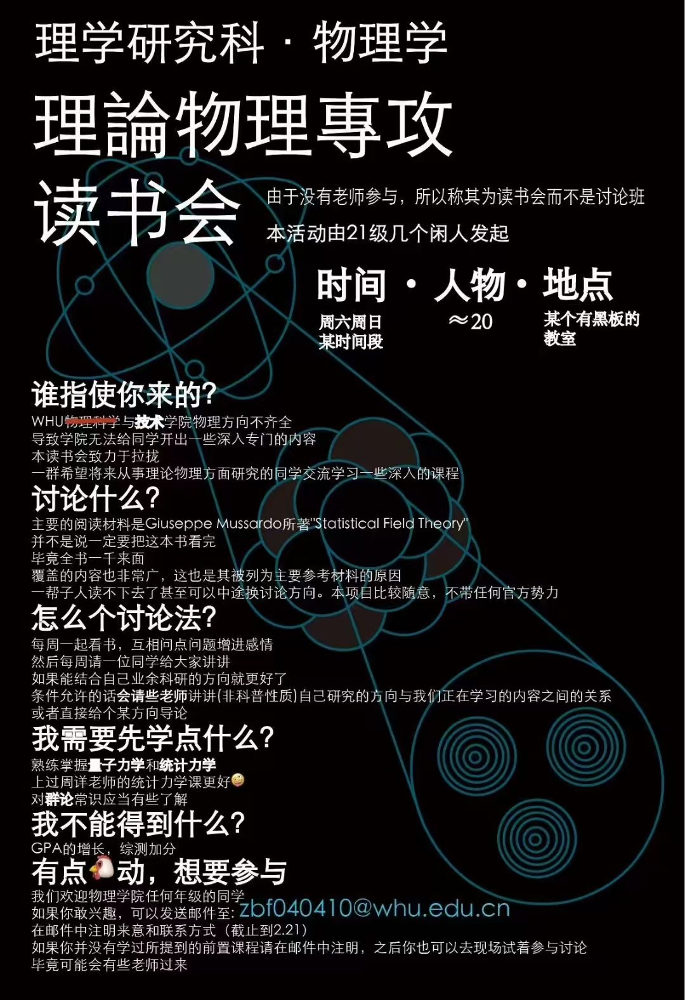
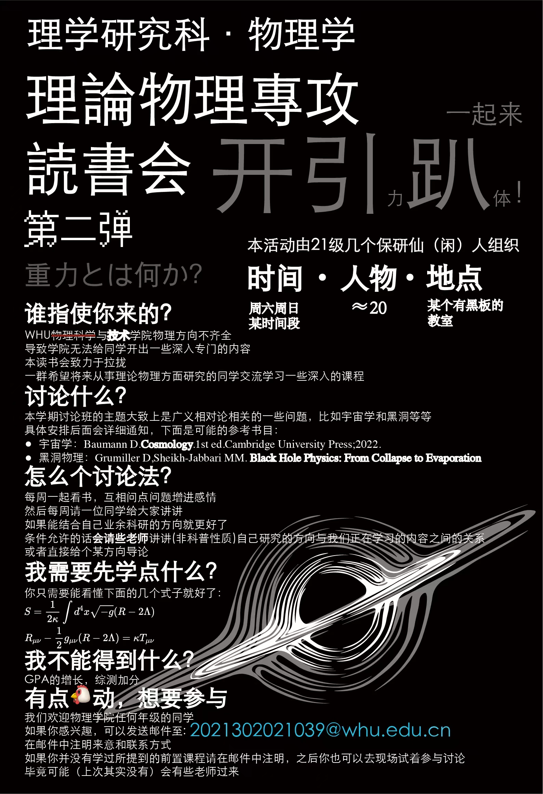

武汉大学在理论物理方向的氛围十分欠缺，为了让更多武大物理系的同学能够接触到理论物理，自2024年春季起我开始主办理论物理讨论班。青眼白龙、张子锐、沈正、张加楠、aojiu、柳淇瀚和陈俊烨等同学在讨论班建设中也发挥了重要作用。

这一届理论物理讨论班我们学习了很多统计物理模型的精确解以及近似解法，后面由我主讲了二维共形场论的相关内容。由于是第一次开展这样的活动，所以经验还不是特别丰富，有很多不足

这一届理论物理讨论班我们学习了Baumann的宇宙学，而且还请来一些学长给我们做了黑洞微观态和弦理论相关的colloquium。暗物质、热大爆炸、暴涨宇宙学等等这些重要的宇宙学模型都有介绍。有了上一次的经验加持，讨论班的发起人很多也是做gr-qc的，所以这一届讨论班要比上一届成功不少。